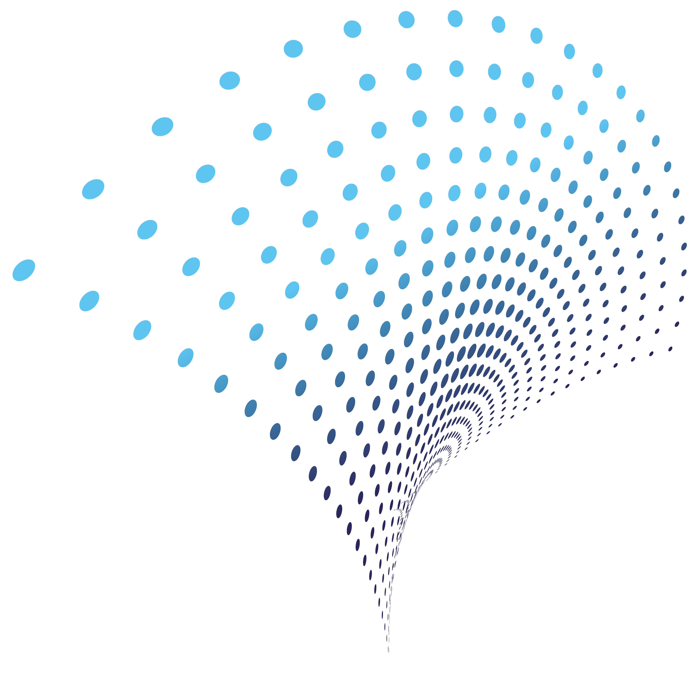
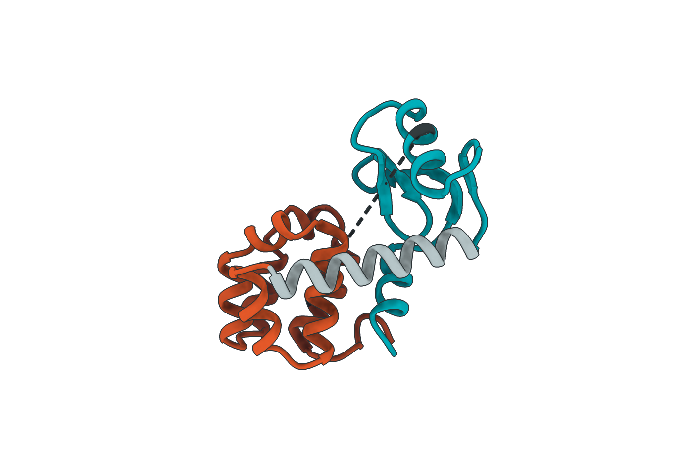
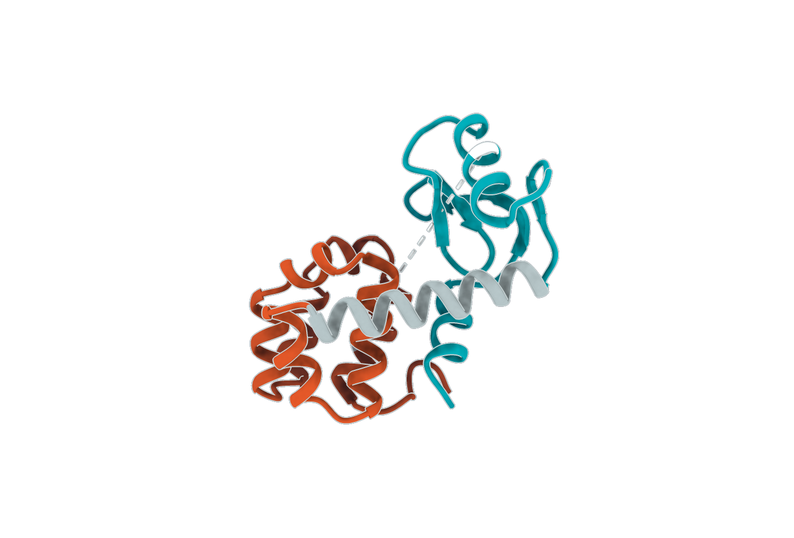

<title>BioEmu2 Benchmarked</title>
<meta name="claude:viewport-fit-sides" content="cover">
<link rel="stylesheet" href="https://fonts.googleapis.com/css2?family=Raleway:ital,wght@0,400;0,500;0,600;0,700;1,400&display=swap">
<style>
/* One narrow reading column. Order follows the argument: what the tool is, the published benchmark
   that legitimises the measuring stick, BioEmu2 placed on it, then the same method extended to
   complexes. Method and limits at the bottom, never inline.
   Chart palette validated 6/6 light and dark: teal = the thing measured, orange = the contrast. */
:root {
  --bg:       #f6f8f8;
  --surface:  #ffffff;
  --rule:     #d6dede;
  --fg:       #14191b;
  --fg-dim:   #5d6c6f;
  --accent:   #2f3e8c;

  --mark:      #3457b2;
  --mark-alt:  #d4121f;
  --mark-mute: #c2cccd;
  --track:     #e7ecec;

  --no:      #d4121f;
  --depends: #8a5a0b;

  --display: "Raleway", "Helvetica Neue", Helvetica, Arial, sans-serif;
  --body:    "Helvetica Neue", Helvetica, Arial, sans-serif;
  --data:    ui-monospace, "SF Mono", Menlo, Consolas, monospace;
}
@media (prefers-color-scheme: dark) {
  :root:not([data-theme="light"]) {
    --bg: #0d1012; --surface: #171d1f; --rule: #2d3739; --fg: #e7ecec; --fg-dim: #96a5a8;
    --accent: #54c0f0;
    --mark: #3d93d6; --mark-alt: #dd6253; --mark-mute: #3b4749; --track: #222a2c;
    --no: #eb7566; --depends: #d9a443;
    color-scheme: dark;
  }
}
:root[data-theme="dark"] {
  --bg: #0d1012; --surface: #171d1f; --rule: #2d3739; --fg: #e7ecec; --fg-dim: #96a5a8;
  --accent: #54c0f0;
  --mark: #3d93d6; --mark-alt: #dd6253; --mark-mute: #3b4749; --track: #222a2c;
  --no: #eb7566; --depends: #d9a443;
  color-scheme: dark;
}

* { box-sizing: border-box; }
body {
  background: var(--bg); color: var(--fg); margin: 0;
  font-family: var(--body); font-size: 16.5px; line-height: 1.6;
  -webkit-font-smoothing: antialiased;
}
.wrap {
  max-width: 680px; margin: 0 auto;
  padding-left: max(16px, env(safe-area-inset-left, 0px));
  padding-right: max(16px, env(safe-area-inset-right, 0px));
}
main { display: flex; flex-direction: column; gap: 2.75rem; padding-block: 2.5rem 4rem; }
p { margin: 0; max-width: 60ch; }
.dim { color: var(--fg-dim); }
.small { font-size: 0.92rem; }

h1 {
  font-family: var(--display); font-weight: 600; margin: 0;
  font-size: clamp(2rem, 7vw, 2.8rem); line-height: 1.05; letter-spacing: -0.015em; text-wrap: balance;
}
h2 {
  font-family: var(--display); font-weight: 600; margin: 0;
  font-size: clamp(1.35rem, 4.2vw, 1.7rem); line-height: 1.2; text-wrap: balance;
}
h3 { font-size: 1rem; font-weight: 600; margin: 0; }
.eyebrow {
  font-family: var(--data); font-size: 0.7rem; letter-spacing: 0.13em;
  text-transform: uppercase; color: var(--fg-dim); margin: 0;
}

header { border-bottom: 1px solid var(--rule); }
header .wrap { display: flex; flex-direction: column; gap: 1rem; padding-block: 2.5rem 1.75rem; }
.lede { font-size: 1.12rem; }

section { display: flex; flex-direction: column; gap: 1rem; scroll-margin-top: 1rem; }

/* basics: three questions answered */
.basics { display: flex; flex-direction: column; gap: 0; border: 1px solid var(--rule); border-radius: 4px; background: var(--surface); overflow: hidden; }
.basics > div { padding: 0.95rem 1.05rem; border-bottom: 1px solid var(--rule); display: flex; flex-direction: column; gap: 0.3rem; }
.basics > div:last-child { border-bottom: 0; }
.basics q { font-family: var(--display); font-size: 1.12rem; font-weight: 600; quotes: none; }
.basics p { font-size: 0.97rem; }

/* flow diagram */
.flow {
  display: flex; flex-wrap: wrap; align-items: stretch; gap: 0.5rem;
  background: var(--surface); border: 1px solid var(--rule); border-radius: 4px; padding: 1rem;
}
.flow .step {
  flex: 1 1 130px; min-width: 0; display: flex; flex-direction: column; gap: 0.25rem;
  padding: 0.6rem 0.7rem; border: 1px solid var(--rule); border-radius: 3px; background: var(--bg);
}
.flow .step.lit { border-color: var(--mark); }
.flow .step b { font-size: 0.9rem; font-weight: 600; }
.flow .step span { font-size: 0.78rem; color: var(--fg-dim); font-family: var(--data); line-height: 1.4; }
.flow .arrow { align-self: center; color: var(--fg-dim); font-family: var(--data); font-size: 1.1rem; flex: 0 0 auto; }
@media (max-width: 620px) { .flow .arrow { transform: rotate(90deg); } }

dl.gloss { margin: 0; display: flex; flex-direction: column; gap: 0.65rem; }
dl.gloss > div { display: grid; gap: 0.1rem; }
dl.gloss dt { font-family: var(--data); font-size: 0.88rem; font-weight: 500; color: var(--mark); }
dl.gloss dd { margin: 0; font-size: 0.95rem; max-width: 60ch; }

.verdicts { border: 1px solid var(--rule); border-radius: 4px; background: var(--surface); overflow: hidden; }
.verdicts a {
  display: grid; grid-template-columns: 1fr max-content; gap: 0.3rem 1rem; align-items: baseline;
  padding: 0.7rem 0.9rem; border-bottom: 1px solid var(--rule); color: inherit; text-decoration: none;
}
.verdicts a:last-child { border-bottom: 0; }
.verdicts a:hover, .verdicts a:focus-visible { background: var(--track); }
.verdicts .ask { font-weight: 500; min-width: 0; }
.verdicts .ans { font-family: var(--data); font-size: 0.82rem; font-weight: 500; white-space: nowrap; color: var(--no); }
.verdicts .ans.dep { color: var(--depends); }

.answer {
  font-family: var(--display); font-size: 1.15rem; font-weight: 600; line-height: 1.3;
  color: var(--mark-alt); max-width: 50ch; text-wrap: balance;
}
.figure {
  background: var(--surface); border: 1px solid var(--rule); border-radius: 4px;
  padding: 1.1rem 1.1rem 0.95rem; display: flex; flex-direction: column; gap: 1rem; min-width: 0;
}
.figure .cap { font-size: 0.82rem; color: var(--fg-dim); line-height: 1.5; max-width: 62ch; }
.ftitle { font-family: var(--data); font-size: 0.72rem; letter-spacing: 0.08em; text-transform: uppercase; color: var(--fg-dim); margin: 0; }
.unit { font-family: var(--data); font-size: 0.72rem; color: var(--fg-dim); margin: 0; }
.two { display: grid; gap: 1.5rem; grid-template-columns: 1fr 1fr; }
@media (max-width: 560px) { .two { grid-template-columns: 1fr; } }
.two > div { display: flex; flex-direction: column; gap: 0.6rem; min-width: 0; }

.bars { display: flex; flex-direction: column; gap: 0.45rem; }
.bar {
  display: grid; gap: 0.25rem 0.7rem; align-items: center;
  grid-template-columns: minmax(7ch, 15ch) minmax(0, 1fr) max-content;
}
.bar .lab { font-family: var(--data); font-size: 0.76rem; color: var(--fg-dim); min-width: 0; }
.bar .track { min-width: 0; background: var(--track); border-radius: 2px; height: 1.3rem; }
.bar .fill { display: block; height: 100%; border-radius: 2px; background: var(--mark); min-width: 2px; }
.bar .fill.alt { background: var(--mark-alt); }
.bar .fill.mute { background: var(--mark-mute); }
.bar .val { font-family: var(--data); font-size: 0.78rem; font-variant-numeric: tabular-nums; white-space: nowrap; }
@media (max-width: 460px) {
  .bar { grid-template-columns: minmax(0, 1fr) max-content; }
  .bar .lab { grid-column: 1 / -1; }
}

.waffle { display: flex; gap: 1.25rem; flex-wrap: wrap; align-items: start; }
.wgroup { display: flex; flex-direction: column; gap: 0.4rem; }
.dots { display: grid; grid-template-columns: repeat(6, 11px); gap: 2px; }
.dots i { width: 11px; height: 11px; border-radius: 2px; background: var(--mark-mute); display: block; }
.dots i.in { background: var(--mark); }
.wlab { font-family: var(--data); font-size: 0.72rem; color: var(--fg-dim); line-height: 1.25; }
.wlab b { display: block; font-size: 1.05rem; font-weight: 500; color: var(--fg); font-variant-numeric: tabular-nums; }
.wgroup.hit .wlab b { color: var(--mark); }

.legend { display: flex; flex-wrap: wrap; gap: 0.35rem 1rem; font-family: var(--data); font-size: 0.73rem; color: var(--fg-dim); }
.legend span { display: inline-flex; align-items: center; gap: 0.35rem; }
.legend i { width: 10px; height: 10px; border-radius: 2px; background: var(--mark); display: inline-block; }
.legend i.alt { background: var(--mark-alt); }
.legend i.mute { background: var(--mark-mute); }

.stat { display: flex; align-items: baseline; gap: 0.6rem; flex-wrap: wrap; }
.stat b {
  font-family: var(--display); font-weight: 600; font-size: clamp(2.6rem, 11vw, 3.8rem);
  line-height: 0.9; letter-spacing: -0.02em; color: var(--mark-alt);
}
.stat span { font-size: 1rem; max-width: 32ch; }

pre.contract {
  font-family: var(--data); font-size: 0.8rem; line-height: 1.8; margin: 0;
  background: var(--surface); border: 1px solid var(--rule); border-left: 3px solid var(--mark);
  border-radius: 4px; padding: 0.95rem 1rem; overflow-x: auto; min-width: 0;
}
pre.contract b { color: var(--mark-alt); font-weight: 500; }

dl.compact { margin: 0; display: flex; flex-direction: column; gap: 0.8rem; }
dl.compact > div { display: grid; gap: 0.15rem; }
dl.compact dt { font-weight: 600; font-size: 0.97rem; }
dl.compact dd { margin: 0; font-size: 0.92rem; color: var(--fg-dim); max-width: 60ch; }

.scroller { overflow-x: auto; min-width: 0; }
table { border-collapse: collapse; font-size: 0.85rem; width: 100%; }
th, td { text-align: left; padding: 0.45rem 0.8rem 0.45rem 0; border-bottom: 1px solid var(--rule); white-space: nowrap; }
thead th { font-family: var(--data); font-size: 0.68rem; letter-spacing: 0.08em; text-transform: uppercase; color: var(--fg-dim); font-weight: 500; }
td { font-family: var(--data); font-variant-numeric: tabular-nums; }
tbody tr:last-child td { border-bottom: 0; }

ul { margin: 0; padding-left: 1.1rem; display: flex; flex-direction: column; gap: 0.45rem; }
ul li { max-width: 60ch; font-size: 0.95rem; }
li::marker { color: var(--fg-dim); }
a { color: var(--accent); text-underline-offset: 2px; }
code { font-family: var(--data); font-size: 0.87em; background: var(--track); padding: 0.06em 0.3em; border-radius: 2px; }
hr { border: 0; border-top: 1px solid var(--rule); margin: 0; }
footer { border-top: 1px solid var(--rule); }
footer .wrap { padding-block: 1.75rem 1rem; }
footer p { font-size: 0.8rem; color: var(--fg-dim); font-family: var(--data); line-height: 1.6; max-width: 70ch; }

/* molecular figure, one image per theme */
figure.mol { margin: 0; display: flex; flex-direction: column; gap: 0.7rem;
  background: var(--surface); border: 1px solid var(--rule); border-radius: 4px; padding: 0.6rem 1rem 1rem; }
figure.mol img { display: block; width: 100%; height: auto; max-width: 100%; }
figure.mol figcaption { font-size: 0.85rem; color: var(--fg-dim); line-height: 1.5; max-width: 62ch; }
/* specificite : figure.mol img vaut 0-1-2, il faut au moins autant pour le masquer */
figure.mol img.dark-only { display: none; }
@media (prefers-color-scheme: dark) {
  :root:not([data-theme="light"]) figure.mol img.light-only { display: none; }
  :root:not([data-theme="light"]) figure.mol img.dark-only { display: block; }
}
:root[data-theme="dark"] figure.mol img.light-only { display: none; }
:root[data-theme="dark"] figure.mol img.dark-only { display: block; }

/* signature de marque Immunochem */
.brand { display: flex; align-items: center; gap: 0.6rem; }
.brand img { width: 46px; height: auto; display: block; }
.brand span { font-family: var(--data); font-size: 0.72rem; letter-spacing: 0.16em; color: var(--fg-dim); }
footer .brand { margin-bottom: 0.9rem; }
footer .brand img { width: 44px; }
/* un titre de figure = une phrase complete, pas une etiquette */
.figure h3.ft { font-family: var(--display); font-size: 1.08rem; font-weight: 600; line-height: 1.25; margin: 0; }
</style>

<header>
  <div class="wrap">
    <div class="brand"><span>IMMUNOCHEM</span></div>
    <p class="eyebrow">Measured benchmark &middot; BioEmu2 public preview, 2026-10-20</p>
    <h1>BioEmu2 Benchmarked</h1>
    <p class="lede">BioEmu2 exists to produce molecular-dynamics-like ensembles, faster. So there are only three
      questions: is it accurate, does the long horizon hold, and can it reach what simulation cannot afford. We
      measured all three.</p>
  </div>
</header>

<main class="wrap">

  <section>
    <p class="eyebrow">The basics</p>
    <div class="basics">
      <div>
        <q>What is BioEmu2?</q>
        <p>A generative model from Microsoft Research. Sequence in, a pile of 3D structures out, no physics in
          between.</p>
      </div>
      <div>
        <q>Who is it for?</q>
        <p>Anyone who runs molecular dynamics just to watch a protein move. That costs GPU-days for a fraction of a
          microsecond.</p>
      </div>
      <div>
        <q>What is it for?</q>
        <p>Conformational ensembles: many shapes of one protein instead of one rigid structure.</p>
      </div>
    </div>
    <div class="figure">
      <p class="ftitle">The premise: wall-clock for one ensemble, one complex</p>
      <div class="bars">
        <div class="bar"><span class="lab">simulation</span><span class="track"><span class="fill mute" style="width:100%" title="11 to 41 hours"></span></span><span class="val">11&ndash;41 h</span></div>
        <div class="bar"><span class="lab">BioEmu2</span><span class="track"><span class="fill" style="width:0.5%" title="1.5 to 12.5 minutes"></span></span><span class="val">1.5&ndash;12.5 min</span></div>
      </div>
      <p class="cap">Both sides measured in house. Simulation: 3 &times; 100&nbsp;ns at <strong>175 to 674
        ns/day</strong> on a whole A100, systems of 47,000 to 253,000 particles. BioEmu2: 25 structures on one
        23.62&nbsp;GiB slice. Bars to scale.</p>
    </div>
    <div class="stat">
      <b>200&ndash;430&times;</b>
      <span>less wall-clock. That is the offer. The rest of this page is what it costs.</span>
    </div>
  </section>

  <hr>

  <section>
    <p class="eyebrow">Where this starts</p>
    <h2>The benchmark we start from</h2>
    <p>In 2026 Soumendranath Bhakat scored eight generative methods on T4 lysozyme
      (<a href="https://doi.org/10.1021/acs.jcim.6c02044" target="_blank" rel="noopener">JCIM 10.1021/acs.jcim.6c02044</a>).
      The protein is two lobes on a hinge. Both states are known, and a <strong>27.6&nbsp;&micro;s</strong>
      simulation says how often each occurs.</p>
    <figure class="mol">
      
      
      <figcaption>T4 lysozyme, crystal <strong>5LZM</strong>, open. The two lobes are joined by the grey hinge helix.
        The dashed line is the whole measurement: C&alpha;&ndash;C&alpha; <strong>Ser44&ndash;Ile150</strong>, here
        <strong>35.6&nbsp;&Aring;</strong>. Below <strong>25&nbsp;&Aring;</strong> the protein counts as closed. The
        reference simulation is closed <strong>6.8&nbsp;%</strong> of the time.</figcaption>
    </figure>
    <p>BioEmu2 was released on <strong>2026-10-20</strong>, after the paper, so it is not in that panel. We ran it
      through the same pipeline. Then we applied the same design to <strong>28 protein&ndash;protein complexes</strong>
      from DynaBench, each already simulated <strong>3 &times; 100&nbsp;ns</strong>. 126 to 777 residues, 11 of them
      nanobody&ndash;antigen.</p>
    <h3 style="margin-top:0.6rem">What you can actually ask BioEmu2 for</h3>
    <dl class="gloss">
      <div>
        <dt>propagation: a lag from 1 to 1000 ns</dt>
        <dd>Give it a starting pose and a lag, and it returns structures &ldquo;that far later&rdquo;. The
          documentation gives <strong>1&nbsp;ns to 1&nbsp;&micro;s</strong> as the range the model mostly saw in
          training, and states that each result is an <em>endpoint</em>, not a frame of a trajectory. We tested the
          whole range: 1, 10, 50, 200 and 1000&nbsp;ns.</dd>
      </div>
      <div>
        <dt>equilibrium: no lag at all</dt>
        <dd>It ignores your pose and samples what it believes the protein&rsquo;s resting distribution to be. The
          documentation says propagation at long lags should approach this same distribution. Question 2 tests
          exactly that.</dd>
      </div>
      <div>
        <dt>what it will not give you</dt>
        <dd>A trajectory. There is one ordered mode, <code>simulate_trajectory()</code>, and it is not what the other two produce: consecutive frames of a propagation file are as unrelated as random ones.</dd>
      </div>
    </dl>
  </section>

  <hr>

  <section id="q1">
    <p class="eyebrow">Question 1</p>
    <h2>Are BioEmu2&rsquo;s structures accurate?</h2>
    <p class="answer">The structures, yes. The distribution, no.</p>
    <p>Taken one at a time, the structures are clean. On T4 lysozyme the median C&alpha; RMSD to the crystal is
      <strong>0.66 to 0.78&nbsp;&Aring;</strong> in every sampling mode we ran. No broken geometry, no distorted fold. There is no simulation to compare that to: the 27.6&nbsp;&micro;s reference behind the
      published benchmark was never released as a trajectory.</p>
    <p>What the whole collection covers is another matter, and there the comparison does exist.</p>
    <div class="figure">
      <p class="ftitle">T4 lysozyme &middot; how much of the hinge motion each method covers</p>
      <p class="unit">distinct bins of 0.25 nm &times; 0.25 nm reached &middot; more is broader</p>
      <div class="bars">
        <div class="bar"><span class="lab">BioEmu2</span><span class="track"><span class="fill alt" style="width:11.3%" title="8 bins"></span></span><span class="val">8 bins</span></div>
        <div class="bar"><span class="lab">BioEmu v1</span><span class="track"><span class="fill" style="width:36.6%" title="26 bins"></span></span><span class="val">26 bins</span></div>
        <div class="bar"><span class="lab">7 others, pooled</span><span class="track"><span class="fill mute" style="width:100%" title="71 bins"></span></span><span class="val">71 bins</span></div>
      </div>
      <p class="cap">Narrower than the version it replaces. Normalised entropy <strong>0.033</strong> against
        <strong>0.257</strong> for v1. It never closed the hinge: <strong>0 of 500</strong> structures, closest
        attempt <strong>10.2&nbsp;&Aring;</strong> short of the threshold.</p>
    </div>
    <p>On the 28 complexes the same question becomes: does it move the interface as much as the physics did? Each
      complex is judged against the spread of its own three simulation replicas, and lands in one of three groups.</p>
    <div class="figure">
      <p class="ftitle">28 complexes &middot; interface motion against their own simulation</p>
      <p class="unit">lag 1000 ns &middot; n = 28</p>
      <div class="waffle" role="img" aria-label="Of 28 complexes, 12 move less than their own simulation, 8 match it, 8 move more.">
        <div class="wgroup">
          <span class="wlab"><b>12</b>too little</span>
          <div class="dots" title="12 complexes below their simulation spread"><i></i><i></i><i></i><i></i><i></i><i></i><i></i><i></i><i></i><i></i><i></i><i></i></div>
        </div>
        <div class="wgroup hit">
          <span class="wlab"><b>8</b>match</span>
          <div class="dots" title="8 complexes inside their simulation spread"><i class="in"></i><i class="in"></i><i class="in"></i><i class="in"></i><i class="in"></i><i class="in"></i><i class="in"></i><i class="in"></i></div>
        </div>
        <div class="wgroup">
          <span class="wlab"><b>8</b>too much</span>
          <div class="dots" title="8 complexes above their simulation spread"><i></i><i></i><i></i><i></i><i></i><i></i><i></i><i></i></div>
        </div>
      </div>
      <p class="cap">The corpus average lands <strong>0.105&nbsp;&Aring;</strong> from the simulation (1.324 against 1.429&nbsp;&Aring; median interface RMSD), because the two failing groups cancel each other out.</p>
    </div>
    <dl class="compact">
      <div><dt>8 match</dt><dd>Indistinguishable from the simulation on this measurement, for 1/200th of the wall-clock. Use the ensemble as it is.</dd></div>
      <div><dt>12 move too little</dt><dd>A tighter ensemble than the physics gives. Usable, conservative; it will miss rare states.</dd></div>
      <div><dt>8 move too much</dt><dd>The grip has changed, and nothing in the output says so. These are the dangerous ones.</dd></div>
    </dl>
    <p class="dim small">Nothing we tried predicts which group a complex lands in. We tested none of the candidates properly (size, nanobody or not, alignment depth), so no predictor has been <em>tested</em>, which
      is not the same as none existing. One reference run settles it for your system.</p>
  </section>

  <hr>

  <section id="q2">
    <p class="eyebrow">Question 2</p>
    <h2>Can you trust BioEmu2 at a one-microsecond lag?</h2>
    <p class="answer">Ask for 1000&nbsp;ns and you get about 10&nbsp;ns of physics.</p>
    <p>BioEmu2 lets you ask for a structure &ldquo;1000&nbsp;ns later&rdquo;. That is the promise worth the most:
      microseconds that simulation cannot afford. It costs nothing to ask: under 1&nbsp;% more compute on 25 of
      28 complexes. Here is the strongest test, because it needs no external reference at all. <strong>The model is
      checked against itself.</strong></p>
    <div class="figure">
      <p class="ftitle">T4 lysozyme &middot; does propagation converge to the model&rsquo;s own equilibrium?</p>
      <p class="unit">share of structures in the buried state &middot; n = 200 per lag, 250 at equilibrium</p>
      <div class="bars">
        <div class="bar"><span class="lab">propagate 1 ns</span><span class="track"><span class="fill" style="width:0%" title="0 of 200"></span></span><span class="val">0 %</span></div>
        <div class="bar"><span class="lab">propagate 50 ns</span><span class="track"><span class="fill" style="width:0%" title="0 of 200"></span></span><span class="val">0 %</span></div>
        <div class="bar"><span class="lab">propagate 1000 ns</span><span class="track"><span class="fill alt" style="width:77.5%" title="31 of 200"></span></span><span class="val">15.5 %</span></div>
        <div class="bar"><span class="lab">its own equilibrium</span><span class="track"><span class="fill mute" style="width:32%" title="16 of 250"></span></span><span class="val">6.4 %</span></div>
      </div>
      <p class="cap">A propagator run long enough should land on its own equilibrium distribution. At 1000&nbsp;ns it
        <strong>overshoots past it</strong>: 31/200 against 16/250, Fisher <strong>p = 0.0019</strong>. At 1 and
        50&nbsp;ns it has not started: 0/200 against 16/250, <strong>p = 1&times;10<sup>&minus;4</sup></strong>. The
        two modes disagree, and nothing in the output says which one to believe.</p>
    </div>
    <p>Meanwhile the dial barely moves the coordinate it is supposed to move. Multiplying nominal time by
      <strong>1000</strong> shifts the median hinge distance from <strong>3.619 to 3.644&nbsp;nm</strong>, a shift of 0.025&nbsp;nm, which is <strong>2.2&nbsp;%</strong> of the way to the closed state, and in the wrong direction.
      The closed state is never reached at any lag: <strong>0 of 200</strong> each time, against a reference that is
      closed 6.8&nbsp;% of the time.</p>
    <p>On the 28 complexes the dial does move things, steadily away from the reference pose.</p>
    <div class="figure">
      <p class="ftitle">28 complexes &middot; agreement with the reference pose as the lag is turned up</p>
      <p class="unit">median DockQ across the 28, scale 0 to 1 &middot; higher is closer to the reference</p>
      <div class="bars">
        <div class="bar"><span class="lab">lag 1 ns</span><span class="track"><span class="fill" style="width:86.9%" title="DockQ 0.869"></span></span><span class="val">0.869</span></div>
        <div class="bar"><span class="lab">lag 10 ns</span><span class="track"><span class="fill" style="width:83.4%" title="DockQ 0.834"></span></span><span class="val">0.834</span></div>
        <div class="bar"><span class="lab">lag 50 ns</span><span class="track"><span class="fill" style="width:81.5%" title="DockQ 0.815"></span></span><span class="val">0.815</span></div>
        <div class="bar"><span class="lab">lag 200 ns</span><span class="track"><span class="fill" style="width:78.8%" title="DockQ 0.788"></span></span><span class="val">0.788</span></div>
        <div class="bar"><span class="lab">lag 1000 ns</span><span class="track"><span class="fill alt" style="width:72.8%" title="DockQ 0.728"></span></span><span class="val">0.728</span></div>
      </div>
      <p class="cap"><strong>All 28 complexes decline</strong>, 23 of them at every step. Median drop from 1 to
        1000&nbsp;ns: <strong>0.136</strong> (range 0.039 to 0.249). Half of the total drift has already happened by
        <strong>50&nbsp;ns</strong>. On its own this says the dial moves the ensemble steadily, not whether
        it moves it as much as physics would. So we scored the reference simulations against the same crystal and
        put the two on one scale.</p>
    </div>
    <div class="figure">
      <h3 class="ft">Ask BioEmu2 for 50&nbsp;ns and it has moved as little as the simulation has at 1&nbsp;ns</h3>
      <p class="unit">how far the complex has drifted from the crystal &middot; median DockQ over the 28 complexes
        &middot; 1.000 = still on the crystal, lower = further away</p>
      <div class="bars">
        <div class="bar"><span class="lab">BioEmu2, lag 1 ns</span><span class="track"><span class="fill" style="width:86.9%" title="0.869"></span></span><span class="val">0.869</span></div>
        <div class="bar"><span class="lab">simulation at 1 ns</span><span class="track"><span class="fill mute" style="width:80.6%" title="0.806"></span></span><span class="val">0.806</span></div>
        <div class="bar"><span class="lab">BioEmu2, lag 10 ns</span><span class="track"><span class="fill" style="width:83.4%" title="0.834"></span></span><span class="val">0.834</span></div>
        <div class="bar"><span class="lab">simulation at 10 ns</span><span class="track"><span class="fill mute" style="width:72.3%" title="0.723"></span></span><span class="val">0.723</span></div>
        <div class="bar"><span class="lab">BioEmu2, lag 50 ns</span><span class="track"><span class="fill" style="width:81.5%" title="0.815"></span></span><span class="val">0.815</span></div>
        <div class="bar"><span class="lab">simulation at 50 ns</span><span class="track"><span class="fill mute" style="width:71.9%" title="0.719"></span></span><span class="val">0.719</span></div>
      </div>
      <p class="cap">At every matched time BioEmu2 has moved <em>less</em> than the physics, and the gap widens:
        it sits above its own simulation&rsquo;s three-replica range in <strong>19, 17 and 22</strong> of 28
        complexes, and below it at most once. The reading survives a &plusmn;2&nbsp;ns window and the removal of the
        four complexes with a terminal atom at the interface.</p>
    </div>
    <p>Which turns the dial into something you can calibrate. Here is the physical time that actually buys you the
      same amount of change:</p>
    <div class="scroller">
      <table>
        <thead><tr><th>you ask for</th><th>you get (median DockQ)</th><th>the simulation reaches it at</th></tr></thead>
        <tbody>
          <tr><td>1 ns</td><td>0.869</td><td>&le; 0.5 ns</td></tr>
          <tr><td>10 ns</td><td>0.834</td><td>&le; 0.5 ns</td></tr>
          <tr><td>50 ns</td><td>0.815</td><td>1.0 ns</td></tr>
          <tr><td>200 ns</td><td>0.788</td><td>2.0 ns</td></tr>
          <tr><td><strong>1000 ns</strong></td><td><strong>0.728</strong></td><td><strong>10.0 ns</strong></td></tr>
        </tbody>
      </table>
    </div>
    <p class="unit">0.5 ns is our first sampled frame, so the first two rows mean &ldquo;at or before the resolution
      we have&rdquo;. Beyond 100 ns the simulations stop, so nothing checks the dial there at all.</p>
    <p>So the dial is monotone and it is not a clock: it runs roughly <strong>two orders of magnitude slow</strong>.
      That is usable: you can ask for 1000&nbsp;ns knowing you are buying about 10&nbsp;ns of motion. It is not what the parameter name suggests.</p>
    <p>Those three replicas are independent runs, which is what replicas are for, so this is a sample of 25 against a sample of 3, and it can be tested rather than asserted. If BioEmu2&rsquo;s value were
      simply a fourth draw from the same distribution, it would land above all three in one case out of four:
      <strong>7 of 28</strong>. It lands above in <strong>19, 17 and 22</strong>, and below in 0, 0 and 1.
      Binomial p = 2&times;10<sup>&minus;6</sup>, 7&times;10<sup>&minus;5</sup> and
      4&times;10<sup>&minus;9</sup>. The replica range is not a degenerate one either: its median width grows from
      0.078 at 1&nbsp;ns to 0.120 at 100&nbsp;ns, reaching 0.405 on the widest system.</p>
    <p class="dim small">What remains: the three replicas start from one equilibration, so their spread is a lower
      bound on the physics&rsquo; own variability, which makes landing outside it slightly easier. It cannot explain
      a result this one-sided: BioEmu2 is the highest of the four values in 19 to 22 systems out of 28, and
      the lowest in at most one.</p>
    <p>And the one check that works at long lag says the
      drift is not selective. Run <strong>30 pairs</strong> of <em>unrelated</em> proteins through the same
      pipeline and the share that end up in contact goes from <strong>3&ndash;27&nbsp;%</strong> at lag
      50&nbsp;ns to <strong>76&ndash;84&nbsp;%</strong> at lag 1000&nbsp;ns.</p>
    <p>Turning the dial up therefore buys you three things at once: motion away from your starting pose, no way to
      check it, and a sharply higher chance of sticking two proteins together that should never touch.</p>
  </section>

  <hr>

  <section id="q3">
    <p class="eyebrow">Question 3</p>
    <h2>Can BioEmu2 dock two proteins it was never trained on?</h2>
    <p class="answer">On proteins it has seen, it tells a real partner from a stranger. On proteins it has
      not, we could not measure that ability at all.</p>
    <p>This is the real prize: watching two proteins find each other, which no affordable simulation will show you.
      We took solved complexes apart, separating the chains by 20&nbsp;&Aring; and rotating one at random, then asked BioEmu2 to put them back, splitting the complexes by the <strong>2021-09-30</strong> training cutoff. A
      control version hands over the answer, so we know the two sets are equally easy to hold onto.</p>
    <div class="figure">
      <h3 class="ft">The control first: hand BioEmu2 the correct pose and ask it only to keep it</h3>
      <p class="unit">generated structures that stay at CAPRI-acceptable quality or better</p>
      <div class="bars">
        <div class="bar"><span class="lab">complexes in its training data</span><span class="track"><span class="fill" style="width:96%" title="69 of 72 structures"></span></span><span class="val">69 of 72</span></div>
        <div class="bar"><span class="lab">complexes deposited after it</span><span class="track"><span class="fill alt" style="width:100%" title="96 of 96 structures"></span></span><span class="val">96 of 96</span></div>
      </div>
      <p class="cap"><strong>Both sets score the same.</strong> So neither set of proteins is harder than
        the other. Keep that in mind for the next figure.</p>
      <p class="unit">24 complexes from before the cutoff, 26 from after, 3 generated structures each</p>
    </div>
    <div class="figure">
      <h3 class="ft">Now the real task: pull the two chains apart and ask BioEmu2 to put them back together</h3>
      <p class="unit">same measure, same complexes &middot; chains separated by 20 &Aring; &middot; lag 1000 ns</p>
      <div class="bars">
        <div class="bar"><span class="lab">pulled apart, orientation kept &middot; in training data</span><span class="track"><span class="fill" style="width:76%" title="55 of 72"></span></span><span class="val">55 of 72</span></div>
        <div class="bar"><span class="lab">the same, deposited after the cutoff</span><span class="track"><span class="fill alt" style="width:56%" title="54 of 96"></span></span><span class="val">54 of 96</span></div>
        <div class="bar"><span class="lab">pulled apart AND rotated &middot; in training data</span><span class="track"><span class="fill" style="width:33%" title="23 of 69"></span></span><span class="val">23 of 69</span></div>
        <div class="bar"><span class="lab">the same, deposited after the cutoff</span><span class="track"><span class="fill alt" style="width:18%" title="16 of 90"></span></span><span class="val">16 of 90</span></div>
        <div class="bar"><span class="lab">the same, and no similar complex in training either</span><span class="track"><span class="fill alt" style="width:3%" title="1 of 36"></span></span><span class="val">1 of 36</span></div>
        <div class="bar"><span class="lab">random placement, for comparison</span><span class="track"><span class="fill mute" style="width:0%"></span></span><span class="val">0 of 42,000</span></div>
      </div>
      <p class="cap">Here they separate. Neither gap clears significance on its own at 20&nbsp;&Aring;
        (<strong>+0.20</strong> [&minus;0.03, +0.41] with the orientation kept, <strong>+0.16</strong>
        [&minus;0.03, +0.33] without), but across the seven separation conditions we ran, all seven point the same
        way and four exclude zero.</p>
      <div class="legend">
        <span><i></i> complex was in BioEmu2&rsquo;s training data (deposited before 2021-09-30)</span>
        <span><i class="alt"></i> deposited after it</span>
      </div>
    </div>
    <p>So it does better on what it has seen, by a modest margin. But the margin is <em>the same size whether or not
      you give it the orientation</em>: pooled, <strong>+0.22</strong> with the orientation and
      <strong>+0.18</strong> without; apply the same quality filter to both sets and the two become +0.14 and +0.16.
      It is a difference of <strong>level</strong>, not of task.</p>
    <p>The test that matters for a screening pipeline is narrower: hold one chain fixed, offer it the real partner or
      a stranger, and see which one lands on the native site.</p>
    <div class="figure">
      <h3 class="ft">The question a binder screen actually asks: can it tell the real partner from a random protein?</h3>
      <p class="unit">how much of the true binding site the partner reaches &middot; 1.0 = all of it &middot;
        13 pairs per group</p>
      <div class="bars">
        <div class="bar"><span class="lab">protein in training data &middot; its real partner</span><span class="track"><span class="fill" style="width:72%" title="0.72"></span></span><span class="val">0.72</span></div>
        <div class="bar"><span class="lab">the same protein &middot; a random one</span><span class="track"><span class="fill mute" style="width:17%" title="0.17"></span></span><span class="val">0.17</span></div>
        <div class="bar"><span class="lab">protein deposited after &middot; its real partner</span><span class="track"><span class="fill alt" style="width:31%" title="0.31"></span></span><span class="val">0.31</span></div>
        <div class="bar"><span class="lab">the same protein &middot; a random one</span><span class="track"><span class="fill mute" style="width:22%" title="0.22"></span></span><span class="val">0.22</span></div>
      </div>
      <p class="cap">Seen before, the real partner wins by <strong>+0.53</strong> [+0.25, +0.62]. Never seen, by
        <strong>+0.08</strong> [&minus;0.14, +0.25], which is not measurable. The two gaps themselves differ by
        <strong>+0.45</strong> [+0.11, +0.69].</p>
    </div>
    <p><strong>This is the one to remember.</strong> BioEmu2 can tell a real binding partner from a random protein, but only for proteins that were in its training data. On proteins that were not, we could not
      measure that ability at all. Before trusting a hit against a new target, check that sentence against your
      own case.</p>
    <p>Two other things you might try instead, and what happens:</p>
    <dl class="compact">
      <div>
        <dt>Switch to equilibrium mode, which ignores your starting pose</dt>
        <dd>18 of the 28 complexes drift further than their simulation does. Eight end up past
          <strong>10&nbsp;&Aring;</strong>, where the two chains are no longer holding each other. And if you give
          the model no starting pose at all, it produces the same thing. So this mode is not exploring further. It
          is letting go.</dd>
      </div>
      <div>
        <dt>Pull a complex apart and watch it come back</dt>
        <dd>You can pull it apart, and it looks right: the chains stay intact and all 2,088 structures pass the
          tool&rsquo;s own physical check. But bring it back to the same distance and none of the original contacts
          return: <strong>0.80</strong> of them on the way out, <strong>0.00</strong> on the way back. A path that
          does not retrace itself tells you nothing about energy or rate, and there is no force and no rate
          constant anywhere in the tool.</dd>
      </div>
    </dl>
    <h3 style="margin-top:0.5rem">Four things we hold back on</h3>
    <ul>
      <li>Only <strong>6</strong> complexes are genuinely new to the model. <strong>24 of the 30</strong>
        supposedly unseen ones still have a close relative in its training data.</li>
      <li>Having a relative works as a <strong>step, not a slope</strong>: 0.03 with none, 0.22 to 0.39 with one.
        The trend across levels is not significant.</li>
      <li>An earlier run of this comparison, on half the complexes, gave a much sharper gap. It shrank when the
        other half arrived.</li>
      <li>One lead worth a proper test: the whole advantage sits on <strong>small interfaces</strong>, under 70
        native contacts. Above that it disappears.</li>
    </ul>
  </section>

  <hr>

  <section id="claims">
    <p class="eyebrow">Side by side</p>
    <h2>What the documentation says, and what we measured</h2>
    <p>The model card is unusually candid. It states that outputs are
      <em>&ldquo;plausible hypotheses, not measurements&rdquo;</em>, and that its known limitations
      <em>&ldquo;have not been quantitatively characterized&rdquo;</em>. That sentence is why this benchmark
      exists. Here is the same list with numbers against it.</p>
    <div class="scroller">
      <table>
        <thead><tr><th>the documentation says</th><th>we measured</th></tr></thead>
        <tbody>
          <tr><td>&ldquo;Propagate structures forward in time&rdquo;</td><td>a 1000 ns lag delivers about <strong>10 ns</strong> of the change the physics produces</td></tr>
          <tr><td>lags of 1 to 1000 ns, &ldquo;the range the model mostly saw during training&rdquo;</td><td>the code accepts <strong>any positive number</strong>. The only check is finite and positive. Ask for 100,000 ns and it runs, and writes that figure into the output</td></tr>
          <tr><td>&ldquo;At longer lags, endpoints approach the equilibrium ensemble&rdquo;</td><td>at 1000 ns propagation <strong>overshoots</strong> its own equilibrium: 15.5 % buried against 6.4 %, p = 0.002</td></tr>
          <tr><td>&ldquo;Each result is an endpoint, not an intermediate frame in a trajectory&rdquo;</td><td>correct, and the file it writes still carries a time axis. Neighbouring frames are as unrelated as random ones</td></tr>
          <tr><td>&ldquo;Sample equilibrium ensembles&rdquo;</td><td>on T4 lysozyme it covers <strong>8</strong> bins of shape space where BioEmu v1 covered 26</td></tr>
          <tr><td>&ldquo;Quality is expected to fall for shallow or poor MSAs&rdquo;</td><td>confirmed, and it compounds: 3 of our 6 genuinely new complexes have fewer than 10 aligned sequences</td></tr>
          <tr><td>&ldquo;May struggle&hellip; for extremely large complexes (over 10k tokens)&rdquo;</td><td>long before that, memory does: on a <strong>24 GB</strong> card the practical ceiling is ~835 residues</td></tr>
          <tr><td>proteins, nucleic acids, ligands and other components</td><td>we tested <strong>proteins only</strong></td></tr>
        </tbody>
      </table>
    </div>
    <p class="unit">Quotations from the project&rsquo;s own <code>README.md</code>, <code>MODEL_CARD.md</code> and
      <code>docs/propagation.md</code>; the lag check is <code>propagation.py:242</code>.</p>
    <p class="dim small">One note on a figure we could not source. Third-party summaries of BioEmu2 quote speedups
      of &ldquo;millions of times&rdquo; over molecular dynamics. We did not find that claim anywhere in the
      repository&rsquo;s documentation, and it is not what we measured. The honest ratio depends on what you are
      buying: <strong>200 to 430&times;</strong> less wall-clock for one ensemble, and a lag dial that delivers
      about a hundredth of the physical time you ask it for.</p>
  </section>

  <hr>

  <section>
    <h2>If you use it</h2>
    <p>Five things stop you at the door. All five are detectable on a laptop CPU, before you book a GPU.</p>
    <div class="stat">
      <b>0 / 94</b>
      <span>structures straight from the public database were accepted.</span>
    </div>
    <pre class="contract"><b>1</b>  atom names must follow PDB convention     ILE carries CD1, not CD
<b>2</b>  standard amino acids only                 no modified residues
<b>3</b>  chain IDs sequential from A               A,B, never A,C
<b>4</b>  histidine protonation read from the reference, CONSTANT across frames
<b>5</b>  ~835 residues is the ceiling on a 24 GB card</pre>
    <p class="small dim">First cause of rejection over 94 structures: <code>CD</code> atom name 37&times;, chain
      identifiers 37&times;, <code>HSD</code> 11&times;, insertion codes 9&times;. BioEmu2 checks none of this until
      the model is loaded on the GPU, and the error it raises names one violation at a time. So we wrote the
      pre-flight that is missing: it runs on a laptop, needs no GPU, and reports all five at once. It ships with
      this report.</p>
    <dl class="compact">
      <div>
        <dt>It produces no hydrogens</dt>
        <dd>None. Rebuilding them is required before any contact can be measured. On GPU that step runs <strong>30.8&times;</strong> faster (6,526&nbsp;s &rarr; 211.6&nbsp;s for 277 frames).</dd>
      </div>
      <div>
        <dt>The trajectory file is not a trajectory</dt>
        <dd>Consecutive frames are as unrelated as random ones (ratio <strong>1.007</strong>), yet it carries a time
          axis. Rates computed from it are wrong with no warning.</dd>
      </div>
      <div>
        <dt>Its physical check ignores disulfide bonds</dt>
        <dd>Bonds stretched past <strong>3.0&nbsp;&Aring;</strong> passed <strong>75 times out of 75</strong>. The
          authors&rsquo; own recipe fixes it at <strong>2.1&times;</strong> the cost.</dd>
      </div>
    </dl>
    <div class="scroller">
      <table>
        <thead><tr><th>protein size</th><th>per structure</th><th>25 structures</th></tr></thead>
        <tbody>
          <tr><td>126 residues</td><td>3.6 s</td><td>1.5 min</td></tr>
          <tr><td>227 residues</td><td>6.3 s</td><td>2.6 min</td></tr>
          <tr><td>390 residues</td><td>12.2 s</td><td>5.1 min</td></tr>
          <tr><td>588 residues</td><td>19.7 s</td><td>8.2 min</td></tr>
          <tr><td>777 residues</td><td>30.1 s</td><td>12.5 min</td></tr>
        </tbody>
      </table>
    </div>
    <p class="unit">RTX PRO 6000 Blackwell, 23.62 GiB slice, bf16-mixed, batch 8. Scales as
      N<sup>1.4&nbsp;&plusmn;&nbsp;0.03</sup> above 388 residues. Across 196 runs, <strong>4,897 of 4,900</strong>
      structures were kept and nothing crashed.</p>
  </section>

  <hr>

  <section>
    <p class="eyebrow">Method</p>
    <h2>Controls</h2>
    <p>Each control was itself tested against a case that should make it fire.</p>
    <dl class="compact">
      <div><dt>Chance floor</dt><dd>42,000 random placements, 0 usable poses, best fnat 0.094. That is what makes a score of 0.3 mean something.</dd></div>
      <div><dt>The model&rsquo;s own floor</dt><dd>Output with no starting pose: fnat 0.15, interface RMSD 9.96&nbsp;&Aring;. The same 0.15 is enormous against chance and worthless against this.</dd></div>
      <div><dt>Negative control</dt><dd>15 pairs of unrelated proteins, run identically to the real ones.</dd></div>
      <div><dt>Held-out group with a matching control</dt><dd>Comparable when the answer is handed over (69/72 against 96/96), apart when it is not. Without that control the gap could just mean the newer complexes are harder.</dd></div>
      <div><dt>Same-age, no-treatment control</dt><dd>The pipeline without the pulling keeps fnat 0.77, so the hysteresis is our protocol&rsquo;s and not the tool&rsquo;s.</dd></div>
      <div><dt>Calibration against the published benchmark</dt><dd>We rebuilt Bhakat&rsquo;s two coordinates from scratch: they match his published arrays to <strong>5&times;10<sup>&minus;7</sup>&nbsp;nm</strong> over 8 datasets, and all <strong>221</strong> of his closed references are classified correctly. That is what puts BioEmu2 on his scoreboard rather than ours.</dd></div>
      <div><dt>Our metrics against an independent implementation</dt><dd>Maximum disagreement 0.0005 in fnat and 0.0005&nbsp;&Aring; in interface RMSD.</dd></div>
    </dl>
    <h3 style="margin-top:0.6rem">Limits</h3>
    <ul>
      <li>The complex reference is <strong>3 &times; 100&nbsp;ns</strong>. We can say BioEmu2 does not reproduce it.
        We cannot say it fails at the millisecond, and the absence of any reference past 100&nbsp;ns is itself the
        answer to question 2.</li>
      <li>The T4 lysozyme reference is also a simulation: 27.6&nbsp;&micro;s, not an experiment. Its raw
        trajectories are unpublished.</li>
      <li>&ldquo;Never seen&rdquo; is a deposition date, not proof. The model card also lists simulation ensembles
        and a database of predicted structures.</li>
      <li>MD timings are ours, on an A100, for 47,000 to 253,000 particles. Yours will differ; the comparison carries
        an order of magnitude, not a figure.</li>
      <li>The pulling, the hysteresis and the disulfide recipe each rest on <strong>one</strong> complex.</li>
      <li>One complex is excluded from the disulfide statistics: we first recorded an invented bond there, and the
        crystal declares it at <strong>2.035&nbsp;&Aring;</strong>. The tool was right and our reference had drifted.</li>
      <li>Out of scope: above ~835 residues, small molecules, nucleic acids, interfacial water, binding affinity.</li>
    </ul>
    <p class="small dim">Still owed: the comparison against co-folding models. The five candidates share no common operating regime: one fails above 377 residues, which 13 of our 28 complexes exceed, so its failure rate
      would track protein size rather than model quality. That is a benchmark of its own.</p>
  </section>

</main>

<footer>
  <div class="wrap">
    <div class="brand"><span>IMMUNOCHEM</span></div>
    <p>BioEmu2 on an RTX PRO 6000 Blackwell under Slurm, 23.62 GiB MIG slice. Reference simulations from public
      DynaBench projects (3 &times; 100 ns, 0.1 ns per frame, NAMD 2.13, CHARMM36m, TIP3P, 300 K); MD timings measured
      in house on a whole A100. T4 lysozyme panel from S. Bhakat, J. Chem. Inf. Model. 2026, 10.1021/acs.jcim.6c02044;
      structure rendered from PDB 5LZM in UCSF ChimeraX. Derived data, analysis scripts and the entry checker are
      published with this page; trajectories are not redistributed. Philippe Herman, Immunochem &middot; last
      measured 2026-11-06.</p>
  </div>
</footer>
